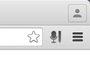
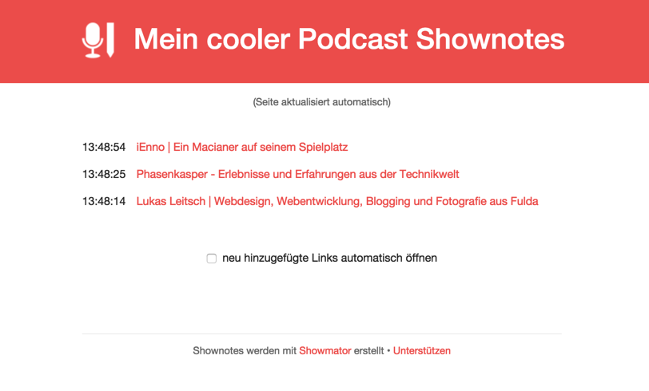
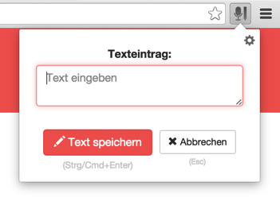
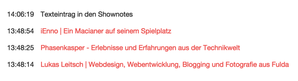
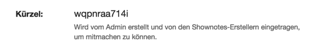

Der Showmator erleichtert dir das Sammeln von Links für deine Shownotes. Einfach, schnell und ohne Ablenkung. Damit du dich auf das konzentrieren kannst, was wichtig ist: dein Podcast.
Per Mausklick oder Tastatur-Shortcut öffnest du das Popup. Titel eingeben, Enter drücken, weiter podcasten.
Für Podcast-Gäste und Live-Hörer
Lass dir von deinen Mitstreitern und Hörer beim Erstellen der Shownotes helfen. Falls du das möchtest.
Live-Shownotes und Auto-Update
Neue Links tauchen automatisch in den Shownotes auf, ohne Neuladen. Bei dir und deinen Mistreitern.
Inline-Bearbeiten und -Löschen
Vertipper oder sonstige Fauxpas mit einem Mausklick und ihne Neuladen korrigieren.
HTML-Export mit diversen Optionen
Fertig mit deinem Podcast und bereit zum Veröffentlichen? Kopiere deine Shownotes direkt als HTML.
... und viele weitere, kleine Details
Vorausgefüllte Linktitel, Timestamps, Texteinträge, Speichern ohne Reload, konfigurierbare Shortcuts und noch ein bisschen mehr.
Roadmap
Der Showmator ist Open Source Software und soll das auch bleiben. Wenn der Showmator dir das Leben als Podcast erleichtert, überleg dir, ob du das Projekt unterstützen möchtest.
Damit sorgst du dafür, dass der Showmator auch in Zukunft, weiterentwicklet werden kann. Hier sind eingie der kommenden Meilensteine:
Extension für Firefox und Safari. Um auch Nutzern anderer Browser das Erstellen Ihrer Shownotes zu erleichtern.
Unterstützung des Open Shownotes Format (OSF). Um die Integration der Showmators in den eigenen Workflows zu vereinfachen.
Möglichkeit zur Internationalisierung. Damit auch der nicht-deutschsprechende Teil der Bevölkerung in den Genuss des Showmators kommt.
Die Chrome-Erweiterung kann über den Chrome-Webstore heruntergeladen werden.
Nach der Installation ist das Showmator-Icon oben rechts in Chrome zu finden.

Showmator-Icon nach der Installation oben rechts
2. Neue Shownotes erstellen
Bevor es losgehen kann, muss in den Einstellungen ein Kürzel erstellt werden, das pro Podcast-Episode eindeutig ist.
Die Einstellungen des Showmators sind über einen Rechtsklick auf das Showmator-Icon zu erreichen (Eintrag Optionen). Es wird automatisch ein Kürzel generiert, das direkt verwendet werden kann. Das Kürzel dient als eine Art Passwort und sollte nicht zu offensichtlich gewählt werden.
Mit einem Klick auf loslegen ist der Showmator einsatzbereit und kann verwendet werden.
Die restlichen Optionen werden wir im Laufe der Anleitung noch behandeln. Aber eins nach dem anderen.
3. Links eintragen
Das Showmator-Popup lässt sich auf jeder Webseite über das Icon oder den Shortcut ⌘⇧E unter OS X und StrgShiftE unter Windows aufrufen.
Popup, um einen Link einzutragen
Über das Popup lässt sich die aktuelle Webseite in die Shownotes eintragen. Der Titel der Webseite ist vorausgefüllt, lässt sich aber natürlich anpassen. Das Speichern des Links ist über den entsprechenden Button oder mit der Enter-Taste möglich.
Sollte die Seite bereits in den Shownotes vorhanden sein, gibt es eine entsprechende Meldung. Dort besteht auch die Möglichkeit den Link aus den Shownotes zu löschen.
4. Live-Shownotes
Die Übersichtsseite aller eingetragenen Links nennen wir Live-Shownotes. Du findest sie, indem du in den Einstellungen den entsprechenden Button klickst.
Button zu den Live-Shownotes
Die Live-Shownotes aktualisieren sich automatisch – und ohne Neuladen – sobald du einen Link hinzufügst.

Live-Shownotes
Der Link zu den Live-Shownotes kann an Mitpodcaster weitergegeben werden. Für die gemeinsame Übersicht oder um in Kollaboration die Shownotes zu erstellen (mehr dazu später).
Genauso eignen sich die Live-Shownotes aber bei Live-Ausstrahlungen um seinen Hörern die Möglichkeit zu geben, sich direkt über das Besprochene zu informieren.
5. Texte ohne Link eintragen
Neben Links können auch Texteinträge – also einfache Kommentare ohne Link – in die Shownotes eingefügt werden. Dazu muss man auf der Live-Shownotes-Seite das Showmator-Popup aufrufen (Klick auf Icon rechts neben der Adressleiste oder über Tastatur-Shortcut). Es öffnet sich ein leicht abgeändertes Popup.

Popup auf der Live-Shownotes-Seite, um einen Texteintrag hinzuzufügen
Bei Klick auf den Text speichern-Button wird der Text sofort in den Live-Shownotes sichtbar.

Texteintrag auf der Live-Shownotes-Seite
6. Shownotes bearbeiten
Der Ersteller der Shownotes hat auf der Live-Shownotes-Seite Bearbeitungsrechte. Wenn die Maus über ein Link bewegt wird, erscheinen ein Bearbeiten- und ein Löschen-Button. Die Einträge können direkt auf der Seite bearbeitet und aktualisiert werden. Natürlich ohne Neuladen.
Admin-Buttons auf der Live-Shownotes-Seite
7. Gemeinsam Shownotes erstellen
Der Showmator ist dafür ausgelegt, dass er von mehreren Leuten mit Links befüllt werden kann. Das können Mitpodcaster oder ausgewählte Hörer sein, im Folgenden “Mitstreiter” genannt.
Nachdem deine Mitstreiter bei sich ebenfalls die Browser-Erweiterung installiert haben, benötigen sie vom Ersteller das eingangs erwähnte Kürzel. Dieses Kürzel dient als Zugang zu den Shownotes. Solltest du es vergessen haben, findest du es in den Einstellungen.

Kürzel in den Einstellungen
Die Mitstreiter müssen nur das Kürzel bei sich eintragen. Ab sofort können sie ebenfalls Links zu deinen Shownotes hinzufügen und selbige auf der Live-Shownotes-Seite bearbeiten.
8. Shownotes in HTML exportieren
Die Aufnahme ist im Kasten und nebenbei wurden fleißig die Shownotes erstellt? Nun sollen die Shownotes auch in den Blogpost zur Podcast-Episode. In den Einstellungen des Showmators lassen sich die Shownotes exportieren.
Export-Button in den Einstellungen
Auf der Export-Seite gibt es einige Optionen, um das Ausgabeformat zu beeinflussen. Wenn die Option als Liste ausgeben aktiviert ist, werden die entsprechenden <ul>- und <li>-Tags hinzugefügt, um die Shownotes als unsortierte Liste einzupflegen.
Beim Hinzufügen eines Links zu den Shownotes speichert der Showmator im Hintergrund auch die aktuelle Zeit. Wenn man diesen Zeitpunkt auch in der Ausgabe sehen soll, muss die Option Zeiten anzeigen aktiviert werden.
Die Zeiten werden dabei relativ zum ersten Eintrag in den Shownotes berechnet. Da in der Regel nicht direkt in Sekunde 1 einer Podcast-Episode ein Link hinzugefügt wird, kannst im Eingabefeld den Zeitversatz im Format hh:mm:ss eintragen.
Ein Beispiel zur Illustration: wenn der erste Link 90 Sekunden nach dem Start der Episode hinzugefügt wurde, dann muss im Eingabefeld der Wert 00:01:30 eingetragen werden.
Alle Änderungen werden sofort sichtbar und erfordern kein Neuladen oder Bestätigen.
Als letzte Option kann jedem Link das Attribut target="_blank" hinzugefügt werden. Damit öffnet sich jeder Link in einem neuen Fenster, was beim Anhören von Podcasts durchaus Sinn macht.
Der fertige HTML-Code lässt sich im Fenster auswählen und in deinen Blogpost o.ä. kopieren.
9. Weitere Optionen
In den Einstellungen des Showmators gibt es noch etwas mehr zu entdecken.
Der Titel wird auf der Live-Shownotes-Seite angezeigt. Sehr praktisch, wenn man einen Live-Podcast betreibt und den Hörern mitteilen möchte, welchen Podcast oder Folge sie gerade hören.
Die Tastenkombination, um den Showmator aufzurufen wurde oben schon angesprochen. Gefällt die Standard-Kombination nicht, besteht hier die Möglichkeit sie nach den eigenen Wünschen anzupassen.
Texteinträge – also einfache Kommentare ohne Link – werden regulär aufgerufen, indem man das Showmator-Popup auf der Live-Shownotes-Seite aufruft. Möchte man auch auf jeder anderen Webseite die Möglichkeit haben, einen Texteintrag hinzufügen, muss die Option Texteintrag-Option im Popup anzeigen aktiviert werden. Anschließend erscheint im Popop eine Option, mit der man von jeder Webseite aus einen Texteintrag hinzufügen kann.
Popup mit Texteintrag-Option
Zu guter Letzt können Links in eine Blacklist eingetragen werden. Jeder Link, der in der Liste ist, kann nicht den Shownotes hinzugefügt werden. Im Popup wird eine entsprechende Meldung erscheinen.
Popup, wenn der Link auf der Blacklist ist
Alle Änderungen werden sofort und ohne Neuladen übernommen.
Will man mit den Shownotes für eine weitere Episode beginnen, muss man die aktuellen Shownotes löschen und ein neues Kürzel erstellen.
Shownotes löschen
Damit das nicht aus Versehen geschieht, ist eine Bestätigung erforderlich.
Wenn du ein Produkt bei Amazon bestellen möchtest, besuche Amazon vor der Bestellung über diesen Link. Du zahlst nichts, wir bekommen aber eine Provision. Das ist die einfachste Möglichkeit das Projekt zu supporten, ohne aktiv Geld in die Hand zu nehmen.
Du bist ein aktiver Flattrist? Dann geht es dir wie vielen Podcastern. Falls dir der Showmator dein Leben als Podcaster vereinfacht, zeig deine Anerkennung, indem du das Projekt flattrst.
Solltest du ein PayPal-Konto besitzen, kannst du den Showmator auch über diesen Weg finanziell etwas unter die Arme greifen. Jede noch so kleine Spende zeigt uns, dass dir das Projekt etwas wert ist. Spende jetzt über Paypal.